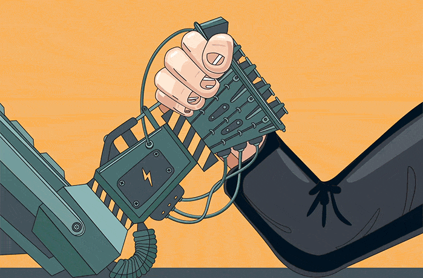

“Good judgement comes from experience, and a lot of that comes from bad judgement.”

AI Lawsuit, Tyler Perry's Alarm, Neurobiology of Love, and NBA's Mind-Blowing Court: Unveiling the Latest Headlines!
Unveiling the intersections of technology, creativity, and legal challenges, this document takes readers on a captivating journey through AI lawsuits, the impact of AI on entertainment, the neurobiology of love, innovative technologies, and the challenges faced by the video game industry.
🎉 Welcome to the Newest / Latest
100% Human Curated and Consumed Content

🎖️ A highly curated collection of humanly consumed knowledge.
The Copyright Battle: Is OpenAI at Risk in the Lawsuit?
As OpenAI faces a copyright infringement lawsuit from The New York Times, the outcome could have significant implications for the AI community.

"We’re pretty sure we understand how copyright works. And we’re here to warn the AI community that it needs to take these lawsuits seriously."
🧐 TOKEN INSIGHTS ⤵
The intersection of artificial intelligence and copyright law has become a contentious issue, with OpenAI recently being sued by The New York Times for alleged copyright infringement. This executive briefing delves into the potential implications of the lawsuit and provides insights into the legal landscape surrounding AI and copyright.
⚡️ INDUSTRY HIGHLIGHTS ::.
- The copyright lawsuit against OpenAI raises questions about the use of training data in AI models.
- Precedents like the Google book search case provide some legal support for AI companies, but there are potential risks involved.
- Lessons from past copyright lawsuits, such as the case of MP3.com, highlight the need for caution and understanding of fair use in AI development.
🔑 KEY TOPICS & INSIGHTS ::.
- The legal implications of using copyrighted material for training AI models.
- The relevance of the Google book search case in the context of AI and fair use.
- Lessons learned from past copyright lawsuits and their applicability to AI companies.
🎈 FUN FACTS ::.
The landmark 2015 decision allowing Google to scan millions of copyrighted books for its search engine was based on the concept of fair use.
Tyler Perry Raises Alarm on AI, Puts $800M Studio Expansion on Hold
Tyler Perry expresses concerns about the impact of AI on the entertainment industry, putting his studio expansion plans on hold.
 Katie Kilkenny
Katie Kilkenny
"I feel like everybody in the industry is running a hundred miles an hour to try and catch up, to try and put in guardrails."
— Tyler Perry